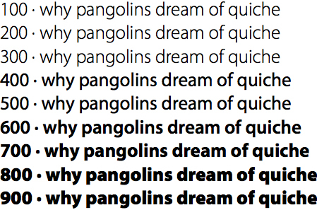
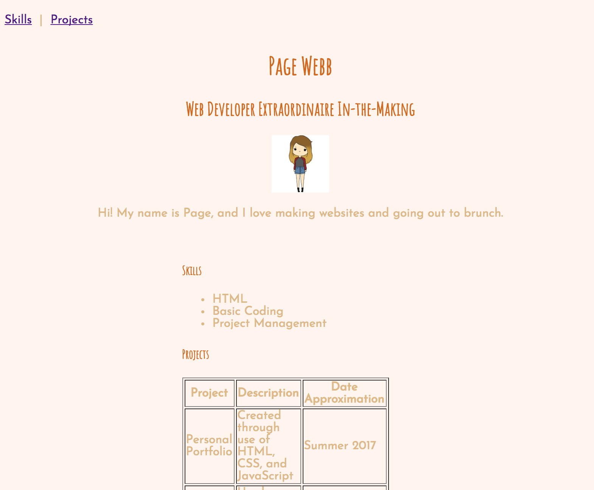

[Home](index.html)
## Structure, Style, Starter Code: Part Six
[<< Previous Lesson](lesson-htmlcss-2c.html)&nbsp;&nbsp;|&nbsp;&nbsp;[Next Lesson >>](lesson-htmlcss-3.html)
### CSS: Clearly Stylish? Surely.
#### Fontastic Beasts, and How to Make Them
As expansive as CSS allows you to be when styling your site (and there are countless cool new features that CSS3 offers that will remain uncovered here), perhaps the last major frontier to pioneer for the purposes of this lesson are **CSS fonts** and text alteration, a child node of the larger styling applied to elements and divs.
The four main CSS font properties are **font family**, **boldness**, **size**, and **style** of a text.
* **Font Family** can be either generic (*serif*, *sans serif*, or *monospace*) or specific (*Times New Roman*, *Arial*, *Courier New*, and other basic font names)
<img src="images/font-family.gif" alt="Font Family" style="height: 50%; width: 50%">
<br><span style="color:grey">Source: [w3 schools](https://www.w3schools.com/css/css_font.asp)</span>
<br>
| Generic Family | Specific Families |
| -------------- | ----------------- |
| Serif | Times New Roman, Georgia |
| Sans Serif | Arial, Verdana |
| Monospace | Courier New, Lucida Console |
When declaring the font-family property, it is good practice to use several names as a fallback system, so that the browser can use the subsequent fonts if it does not support the first, like [so](https://www.w3schools.com/css/tryit.asp?filename=trycss_font-family).
```
p {
font-family: "Times New Roman", Times, serif;
}```
Another good alternative to this is linking your stylesheet to one of Google's many font APIS by inserting an import line at the top of your CSS file. Make sure you checkout [fonts.google.com](http://fonts.google.com) in advance to select a font or font pairing you may like.
<span style="color:blue">Quick Tip: </span> Sans serif fonts are usually seen as easier to read in browser. It is also advised that you use no more than two fonts on any page at a time in order to maintain uniform, good design. For help on how to choose fonts that go well together, check out [Font Pair](http://fontpair.co/#).
* **Boldness** of a font can be defined through the [**font-weight**](https://www.w3schools.com/css/tryit.asp?filename=trycss_font-weight) property. The value of font-weight can be set using either the keywords *lighter*, *normal*, *bold*, or *bolder*, or using multiples of 100 from '100' to '900' (100 being the lightest and 900 being the thickest).

<br><span style="color:grey">Source: [Clagnut](http://clagnut.com/blog/2228)</span>
* [**Font-Size**](https://www.w3schools.com/code/tryit.asp?filename=FJS1TXK6XN84) can be set through *absolute* means (through pixels or em) or through *relative* means (through percentage). One of the drawbacks to absolute sizing is that it does not allow the user to change the text size in all browsers, so relative sizing is usually recommended for development purposes.
```
h1 {
font-size: 40px;
}
h2 {
font-size: 1.875em; /* 30px/16=1.875em */
}
p {
font-size: 75%;
}```
* **Font-Style** is a trivial property mostly used to specify italic text. Its three values are *normal*, *italic*, and *oblique* (where the text is similar to italic, but supported on fewer browsers).
<br>
#### <span style="color:red">Challenge #3: Turning your Fontasy into a Reality </span> <br>
Let's apply your fonts of choice as a means of polishing up your final site. Using the font sites mentioned above, choose one font for all your header text and another font for all other text. Apply to the top of your CSS file like so:
```
@import url('https://fonts.googleapis.com/css?family=First+Font+Here|Yet+Another+Font');```
Then, add them to your CSS elements specifically.
```
body{
font-family: 'First Font Here', ___;
font-size: ___;
font-weight: ___;
}
h1, h2, h3, h4, h5, h6{
font-family: 'Yet Another Font', ___;
font-weight: ___;
}```
Compare your final product to the one shown here.

___
In closing, it's nearly impossible to know every feasible CSS attribute and attribute value out there, but here's [a good reference that encompasses everything you may need](https://www.onblastblog.com/css3-cheat-sheet/). Read through it, play with new attributes you haven't touched before, and keep revising your portfolio until you're content with your outfit du jour :) .
[<< Previous Lesson](lesson-htmlcss-2c.html)&nbsp;&nbsp;|&nbsp;&nbsp;[Next Lesson >>](lesson-htmlcss-3.html)